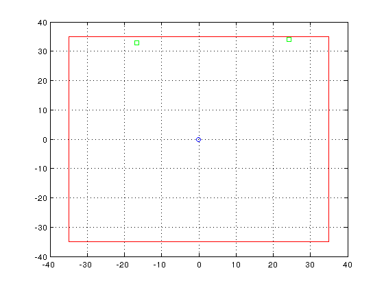

WiNetSim
*Wireless Network Simulator* Copyright (C) 2016 IIT Hyderabad
This program is free software: you can redistribute it and/or modify it under the terms of the GNU General Public License as published by the Free Software Foundation, either version 3 of the License, or any later version.
This program is distributed in the hope that it will be useful, but WITHOUT ANY WARRANTY; without even the implied warranty of MERCHANTABILITY or FITNESS FOR A PARTICULAR PURPOSE. See the GNU General Public License for more details.
You should have received a copy of the GNU General Public License along with this program. If not, see <http://www.gnu.org/licenses/>.
Contact Information WiNetSim Admin : sreekanth@iith.ac.in Address : comm-lab, IIT Hyderabad
Contents
help
clear all % clear all variables clc % clear command screen addpath('802.11ac','BLER_LUTs','channel_models'); %add paths 802.11ac BLER and channel models addpath(genpath('scenarios')); % recursively include scenarios
imp parameters
NCell = 1; %no of cell n_AP =1; % no of access points per cell n_STA=4; % no of STAs per access point
total_devices = (NCell*n_AP*n_STA)+(NCell*n_AP); length_room = 70; %m breadth_room = 70; %m Preamble_th_dbm = -82; %dbm sensing threshold parameter.WIFI_TH = 10^(0.1*(Preamble_th_dbm-30-10*log10(56))); converting to watts Network_load_Mbps = 100*1e6; % Network load in bps file_size = 1000000; %file size in bits parameter.file_size=file_size; DL_UL =1; % DL to UL Ratio
scenario
scenario for upto 9 cells n APs percell and m STAs per AP scenario_ncell_nap_nsta
clear all % clear all variables clc % clear command screen addpath('802.11ac','BLER_LUTs','channel_models'); %add paths 802.11ac BLER and channel models addpath(genpath('scenarios')); % recursively include scenarios
imp parameters
NCell = 1; %no of cell n_AP =1; % no of access points per cell n_STA=2; % no of STAs per access point total_devices = (NCell*n_AP*n_STA)+(NCell*n_AP); length_room = 70; %m breadth_room = 70; %m Preamble_th_dbm = -82; %dbm sensing threshold parameter.WIFI_TH = 10^(0.1*(Preamble_th_dbm-30-10*log10(56))); %converting to watts Network_load_Mbps = 10*1e6; % Network load in bps file_size = 1000000; %file size in bits parameter.file_size=file_size; DL_UL =1; % DL to UL Ratio
WDEavR system time 1.130 sMean Delay is 37.719818 milli seconds RO_DL: 3.532907 RO_UL: 6.182588 Measured Total Network load is 10.598722 and Given Load: 10.000000 Sim Run Time 1.132212 seconds
scenario
scenario for upto 9 cells n APs percell and m STAs per AP
scenario_ncell_nap_nsta